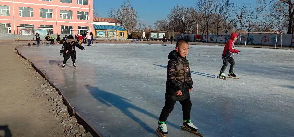

 六七岁的小学生，脚穿冰刀，在富裕县逸夫小学冰场上自由驰骋，这是北国风光校园里一幅多美的画卷呀！ 富裕县逸夫小学自入冬以来，就积极浇筑冰场，冰场浇筑成功之日就是逸小学子冰上尽展风采时刻。 今年新入学的一年级学生，平均年龄只有六七周岁，但是在体育教师的积极引导下纷纷走进冰场，一个中午午休时间就从不会滑到自由驰骋。这是逸夫小学体育教师特有的教学技能：大爱护航，倾力传授。 儿童是祖国的未来，教育要从娃娃抓起，锻炼孩子的身体也要从娃娃抓起，逸夫小学的冰上训练课，培养了低年级学生体育活动的兴趣，使学生能快乐地参与各种体育活动，增强了学生的体质。富裕县逸夫小学愿意做学生们成长路上的筑梦人，让逸小学子在德智体美全面发展的基础上逐梦远航！